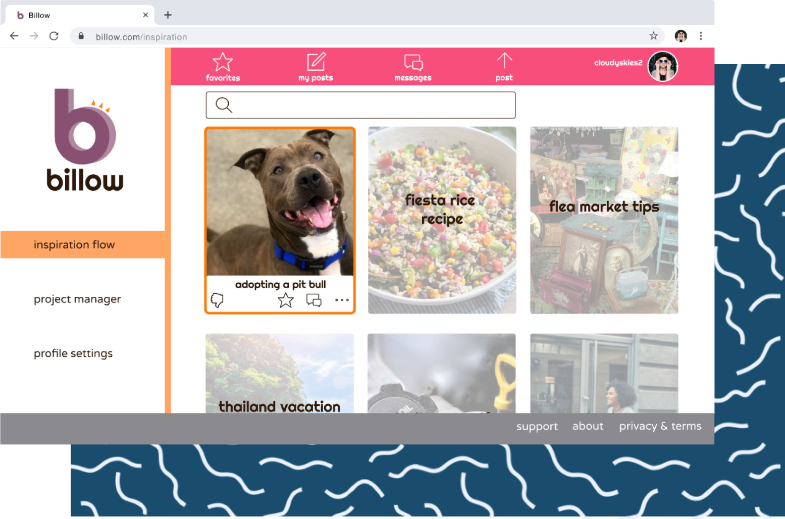

I'm a web designer from Cleveland. My background is in marketing for the entertainment industry. I am passionate about design and specialize in user experience and content strategy for web and mobile.
Get to know me
Case studies☟

Billow
A cloud storage app and collaborative community for creative women.
Check out Billow
The Gory Details
A user-generated collection of validated resources detailing
historical instances of criminality and deviousness.
See The Gory Details